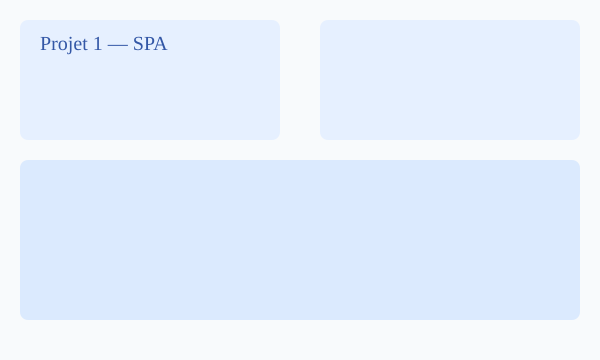
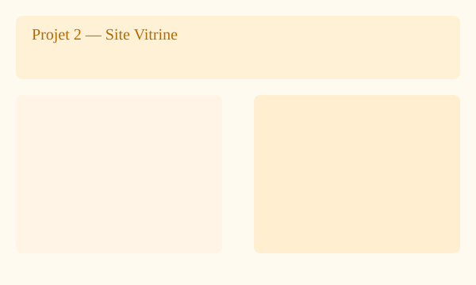
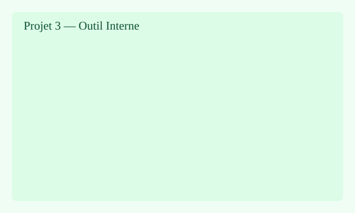

Projet 1 — Application SPA
Application monopage construite avec une architecture modulaire, routage client et gestion d'état minimal.
Rôle : développement frontend, intégration API.
Voici des captures et résumés des projets 1 à 3 :

Application monopage construite avec une architecture modulaire, routage client et gestion d'état minimal.
Rôle : développement frontend, intégration API.

Site responsive mis en ligne avec optimisation SEO et performance (images optimisées, lazy-loading).
Rôle : design responsive, optimisation accessibilité.

Outil interne pour la gestion des tâches, intégration d'API, tests unitaires et documentation.
Rôle : développement fullstack, tests.